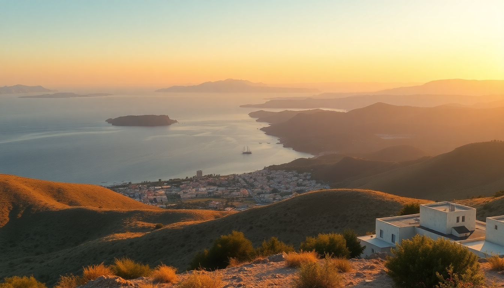

Best Day Trips from Crete: Chania, Heraklion & Elafonisi

We based ourselves in a rented apartment near Platanias for a week, and quickly realized Crete is too big to “see” from one spot. The island stretches over 160 miles east to west, so day trips need real planning. I learned the hard way that trying to do both Chania and Elafonisi on the same Tuesday meant six hours in a rental car and zero beach time. Here’s what actually worked.
Is Chania worth a full day, or just a half-day stop?
Chania deserves a full day if you pace yourself. The old Venetian harbor looks exactly like the postcards, but the real magic is in the backstreets of the Splantzia neighborhood, where the crowds thin out. We grabbed coffee at Koukouvaya, a café perched on the edge of the old fortifications, and watched the fishing boats bob without the harbor chaos.
What to hit in Chania on a day trip:
- Old Venetian Harbor — walk the entire curve early (before 9 AM) to beat the cruise ship crowds
- Splantzia Market — skip the tourist trinkets and buy dried oregano and olive oil soap from the stalls near the municipal market
- Firkas Fortress — small entry fee, but the view over the harbor is the best photo spot in town
- To Stachi — a tiny bakery on Kondylaki street for the best bougatsa (custard pie) I ate on the whole trip
- Nea Chora beach — a 10-minute walk west of the harbor, where locals swim and the tavernas charge half the harbor prices
What’s the best way to see Heraklion without hating it?
I’ll be honest: Heraklion felt like a concrete scrum at first. The city is loud, dusty, and the traffic around the port is brutal. But the archaeological museum and Knossos make it unavoidable. We parked at the Porter’s Lodge parking near the old city walls and walked everywhere. That saved us from the one-way street nightmare.
Heraklion day trip essentials:
- Knossos Palace — book a 9 AM slot via the official ticketing site (the audio guide is worth the €8, but skip the guided tour groups that clog the Throne Room)
- Heraklion Archaeological Museum — this is better than the site itself; the frescoes and the Phaistos Disc are in pristine condition, and the AC is a lifesaver in July
- Agios Minas Cathedral — one of the largest Orthodox cathedrals in Greece, free entry, and eerily quiet inside
- Peskesi restaurant — a 5-minute walk from the museum; the lamb with honey and rosemary is the best meal we had in the city
- The old market street (1866 Street) — good for souvlaki and leather sandals, but haggle hard; the shops near the fountain charge double
Is Elafonisi really as pink as the photos?
The pink sand is real, but it’s subtle — more blush than bubblegum. We went on a Wednesday in late June and the beach was packed by 11 AM. The water is absurdly clear and shallow for about 50 meters out, which makes it perfect for families. But the hype around the “pink beach” means the parking lot fills by 10 AM.
How to do Elafonisi right:
- Leave Chania by 7 AM — the drive takes 90 minutes on winding mountain roads; any later and you’ll queue for parking
- Bring water shoes — the sand gets scorching by noon, and the lagoon bottom near the sandbar has sharp rocks
- Walk to the far end — most people camp near the main beach; hike 15 minutes to the southern tip near the cedar forest for quieter swimming
- Skip the beachfront tavernas — the food is overpriced and bland; pack a picnic from the Kritikos bakery in the village of Elos on the drive down
- Stay until 4 PM — the tour buses leave around 2:30, and you get two hours of near-empty beach before the sun dips behind the hill
Should we add Rethymno to the itinerary?
Yes, but as a stopover, not a destination. Rethymno’s old town has a similar Venetian vibe to Chania but feels more lived-in and less polished. We stopped there for lunch on the way from Chania to Heraklion and it was the perfect break. The Fortezza fortress dominates the skyline, but the real charm is the narrow alleys off Arkadiou Street.
Rethymno quick hits:
- Fortezza — €6 entry, and the views over the Libyan Sea are worth it, but skip the museum inside (it’s dusty and sparse)
- Rimondi Fountain — a pretty Venetian fountain in the old town square, good for a photo and a cold bottle of water
- To Pigadi — a taverna on a quiet side street near the Neratzes mosque; the grilled octopus was the best I had in Crete
- Rethymno beach — long and sandy, but windier than Chania’s beaches; fine for a quick dip but not a full day
What about Agios Nikolaos for a different vibe?
Agios Nikolaos (often called Agios Nik) is on the eastern side of Crete, a 90-minute drive from Heraklion. It’s a resort town that feels more polished than the west — think boutiques and yacht clubs instead of backpacker hostels. We went for the lake and stayed for the seafood.
Agios Nikolaos day trip highlights:
- Lake Voulismeni — a deep, circular lake right in the town center; legend says Athena bathed here, but today it’s ringed with cafés
- Almyros Beach — a 20-minute walk from the lake; sandy, less crowded than the main town beach, with a beach bar that rents umbrellas for €8
- Pelagos restaurant — right on the water; the grilled red mullet and the taramasalata were both excellent, and the prices were fair for the location
- The Spinalonga boat trip — ferries leave from the harbor every hour; the former leper colony island is haunting and worth the €12 ticket
FAQ
How many days do I need to see the best of Crete? At least five days if you want to hit Chania, Elafonisi, and Heraklion without rushing. Three days is enough for a focused trip: one for Chania and the western beaches, one for Heraklion and Knossos, and one for Elafonisi. Anything less and you’ll spend more time driving than exploring.
What’s the best way to get around Crete for day trips? Rent a car. The bus system (KTEL) works for Chania to Heraklion, but it’s slow and drops you at the bus station, not the beaches. We rented from Autohellas at Chania Airport for €35 a day in June, and the flexibility to stop at random villages like Vamos and Argyroupoli made the trip. Book in advance — summer sells out.
Is Elafonisi too crowded to enjoy? It depends on your tolerance. If you arrive after 10 AM, yes — it’s shoulder-to-shoulder on the main strip. If you get there by 8:30 AM and walk to the far end, you’ll have plenty of space. Avoid weekends and August entirely. The water is worth the early alarm.
Conclusion
- Chania needs a full day; skip the harbor crowds and explore Splantzia and Nea Chora for the real vibe
- Heraklion is a necessary evil — hit Knossos early, then spend your time in the Archaeological Museum
- Elafonisi is beautiful but fragile; go early, bring water shoes, and pack your own lunch
- Rethymno works best as a lunch stop between Chania and Heraklion
- Agios Nikolaos offers a quieter, more polished alternative if you’re based in eastern Crete